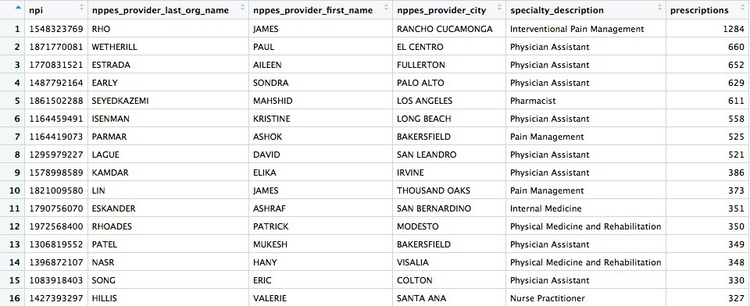
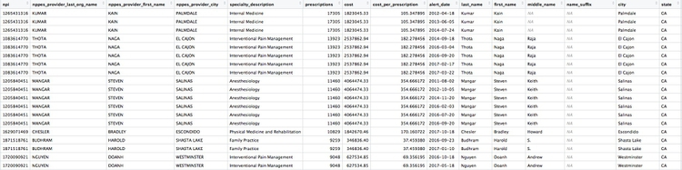

Data journalism in the tidyverse
In last week’s class we worked with a relatively small and simple dataset, on disciplinary actions against California doctors, to learn how to filter, sort, group, and summarize data.
Today we will work with the larger data on doctors in California prescribing opioids under Medicare Part D, learn how to join data in different data frames, and see how to make some simple charts to help make sense of your data.
First we will recap filtering, sorting, grouping and summarizing with the opioid prescription data.
The data we will use
As for last week, here. It contains the following files:
ca_discipline.csvDisciplinary alerts and actions issued by the Medical Board of California from 2008 to 2017. Processed from downloads available here. Contains the following variables:alert_dateDate alert issued.last_nameLast name of doctor/health care provider.first_nameFirst name of doctor/health care provider.middle_nameMiddle/other names.name_suffixName suffix (Jr., II etc)cityCity of practive location.stateState of practice location.licenseCalifornia medical license number.action_typeType of action.action_dateDate of action.
ca_medicare_opioids.csvData on prescriptions of opioid drugs under the Medicare Part D Prescription Drug Program by doctors in California, from 2013 to 2015. Filtered from the national data downloads available here. This is the public release of the data that ProPublica used FOIA to obtain for earlier years for the story we discussed in Week 2. Contains the following variables:npiNational Provider Identifier (NPI) for the doctor/organization making the claim. This is a unique code for each health care provider.nppes_provider_last_org_nameFor individual doctors, their last name. For organizations, the organziation name.nppes_provider_first_nameFirst name for indivisual doctors, blank for organizations.nppes_provider_cityCity where the provider is located.nppes_provider_stateState where the provider is located; “CA” for all of these records.specialty_descriptionProvider’s medical speciality, reported on their medicare claims. For providers that have more than one Medicare specialty code reported on their claims, the code associated with the largest number of services.description_flagSource of thespecialty_description.SMedicare Specialty Code description.TTaxonomy Code Classification description.
drug_nameIncludes both brand names (drugs that have a trademarked name) and generic names (drugs that do not have a trademarked name).generic_nameThe chemical ingredient of a drug rather than the trademarked brand name under which the drug is sold.bene_countTotal number of unique Medicare Part D beneficiaries (i.e. patients) with at least one claim for the drug. Counts fewer than 11 are suppressed and are indicated by a blank.total_claim_countNumber of Medicare Part D claims; includes original prescriptions and refills. If less than 11, counts are not included in the data file.total_30_day_fill_countTotal number of Medicare Part D standardized 30-day fills. The standardized 30-day fill is derived from the number of days supplied on each Part D claim divided by 30.total_day_supplyTotal number of days’ supply for this drug.total_drug_costTotal cost paid for all associated claims; includes ingredient cost, dispensing fee, sales tax, and any applicable fees.bene_count_ge65Total number of unique Medicare Part D beneficiaries age 65 and older with at least one claim for the drug. A blank indicates the value is suppressed.bene_count_ge65_suppress_flagWhy thebene_count_ge65variable is suppressed:*Suppressed due tobene_count_ge65between 1 and 10.#Suppressed because the “less than 65 year old” group (not displayed) contains a beneficiary count between 1 and 10.total_claim_count_ge65Number of Medicare Part D claims for beneficiaries age 65 and older; includes original prescriptions and refills. A blank indicates the value is suppressed.ge65_suppress_flagWhy thetotal_claim_count_ge65,total_30_day_fill_count ge65,total_day_supply_ge65, andtotal_drug_cost_ge65 variablesare suppressed:*Suppressed due tototal_claim_count_ge65between 1 and 10.
#Suppressed because the “less than 65 year old” group (not displayed)
contains a claim count between 1 and 1.
total_30_day_fill_count_ge65Number of Medicare Part D standardized 30-day fills for beneficiaries age 65 and older. Iftotal_claim_count_ge65is suppressed, this variable is also suppressed.total_day_supply_ge65Total days’ supply for which this drug was dispensed, for beneficiaries age 65 and older. Iftotal_claim_count_ge65is suppressed, this variable is also suppressed.total_drug_cost_ge65Total drug cost paid for all associated claims for beneficiaries age 65 and older. Iftotal_claim_count_ge65is suppressed, this is also suppressed.year2013, 2014, or 2015.
npi_license.csvCrosswalk file to join NPI identifiers to state license numbers, processed from the download available here to include license numbers potentially matching California doctors. This will provide one way of joining the precription data to the medical board disciplinary data. As we shall see, problems with the data mean that it is not infallible. Contains the following variables:npiNational Provider Identifier, as described above.plicnumState license number, from the original file.licenseProcessed frompclicnumto conform to the format of California medical license numbers.
Setting up
Open a new R script, save it into the folder with the data as week6.R then set your working directory to the location of this file, as we did last week. Then save your environment as week6.Rdata.
Also load the packages we will work with today:
# load packages to read, write and process data, and to work with dates
library(readr)
library(dplyr)
library(ggplot2)
library(scales)
We worked with readr and dplyr last week. ggplot2 is a package for making charts that is also part of the tidyverse; scales is a package that allows numbers to displayed in formats including currency in dollars, with commas separating thousands, and so on.
Work with the opioid prescriptions data
Load and view the data:
# load opioid prescription data
ca_opioids <- read_csv("ca_medicare_opioids.csv")
# look at the data
View(ca_opioids)
Which doctors wrote the most prescriptions for fentanyl in 2015?
Fentanyl is a particularly controversial opioid, because of its strength: It’s about 75 times more powerful than morphine. That means it can easily cause fatal overdoses — although these mostly happen from illegaly purchased fentanyl.
From the final part of the assignment from last week, you should have seen that there are three variants of fentanyl in the generic_name data: FENTANYL, FENTANYL CITRATE and FENTANYL CITRATE/PF. So if we are to answer this question, we need to filter the data to include all of these drugs, and then add up the prescriptions for each doctor.
This is one way to do this:
# who wrote the most prescriptions for fentanyl in 2015?
fentanyl_2015 <- ca_opioids %>%
filter(year == 2015
& (generic_name == "FENTANYL" | generic_name == "FENTANYL CITRATE" | generic_name == "FENTANYL CITRATE/PF")) %>%
group_by(npi,
nppes_provider_last_org_name,
nppes_provider_first_name,
nppes_provider_city,
specialty_description) %>%
summarize(prescriptions = sum(total_claim_count)) %>%
arrange(desc(prescriptions))
There should be 5259 rows in the data, and the first few should look like this:

The logic of this code should be starting to become familiar. Notice how the OR part of the filter, using |, is put into parentheses to run it first.
After the filter, we need to group by doctor, before summarizing the data. The unique identifying code for each healthcare provider is their National Provider Identifier, or npi. However, if we only group by this, the data returned won’t include any other information about each doctor. So the code above also groups by doctors’ names, locations, and specialties, so the data returned contains more information. This won’t change the grouping, because we are still grouping by individual healthcare provider.
In the summarize function, we need to add the numbers for total_claim_count for each provider, using the function sum, to get the total number of prescriptions written by each one for all the variants of fentanyl.
Here is another, more concise way to obtain the same result:
# who wrote the most prescriptions for fentanyl in 2015?
fentanyl_2015 <- ca_opioids %>%
filter(year == 2015
& grepl("fentanyl", generic_name, ignore.case = TRUE)) %>%
group_by(npi,
nppes_provider_last_org_name,
nppes_provider_first_name,
nppes_provider_city,
specialty_description) %>%
summarize(prescriptions = sum(total_claim_count)) %>%
arrange(desc(prescriptions))
This demonstrates some simple pattern matching on text, using the function grepl("pattern_a|pattern_b", x), which searches variable x for values containing any of a list of text values. Including ignore.case = TRUE means that matches are made irrespective of the case of any of the letters.
grepl is useful for fuzzy text matching, when you want to find text entries that contain variations of the same word or phrase.
But notice that some of the top prescribers were not doctors, but physician assistants, nurse practitioners, or pharmacists. The following code also filters the data to remove data for these healthcare providers:
# which doctors wrote the most prescriptions for fentanyl in 2015?
fentanyl_2015_doctors <- ca_opioids %>%
filter(year == 2015
& grepl("fentanyl", generic_name, ignore.case = TRUE)
& !grepl("assistant|practitioner|pharmacist", specialty_description, ignore.case = TRUE)) %>%
group_by(npi,
nppes_provider_last_org_name,
nppes_provider_first_name,
nppes_provider_city,
specialty_description) %>%
summarize(prescriptions = sum(total_claim_count)) %>%
arrange(desc(prescriptions))
The new part of the filter function uses !grepl to search for text that does not match the pattern, and separates patterns to be searched with | for OR.
There whould be 4,600 rows in this data, and the first few rows should look like this:

Calculate the total number of fentanyl prescriptions, their cost, and the total number of patients, for each year
# calculate the total number of fentanyl prescriptions, their cost, and the total number of patient/drug, for each year
fentanyl_year_summary <- ca_opioids %>%
filter(grepl("fentanyl", generic_name, ignore.case = TRUE)) %>%
group_by(year) %>%
summarize(claims = sum(total_claim_count),
cost = sum(total_drug_cost),
patients = sum(bene_count))
This will be the result:

Something has gone wrong: Instead of calculating the number of patients, the code has returned NA. This will happen when summarizing data if there are any missing, or NA, values. To solve the problem, use the following code, which includes na.rm = TRUE. This tells summary functions to remove NA values before running the calculation:
# calculate the total number of fentanyl prescriptions, their cost, and the total number of patient/drug, for each year
fentanyl_year_summary <- ca_opioids %>%
filter(grepl("fentanyl", generic_name, ignore.case = TRUE)) %>%
group_by(year) %>%
summarize(claims = sum(total_claim_count),
cost = sum(total_drug_cost),
patients = sum(bene_count, na.rm = TRUE))

Now we have data showing a number of patients prescribed fentanyl each year. However, we should treat this number with caution. The description of the data above explains that NA values are introduced wherever a doctor prescribed fentanyl to fewer than 11 patients. So each NA represents between 1 and 10 patients.
How many patients could be missing from the data each year?
# how many patients might be missing from the data?
fentanyl_year_missing <- ca_opioids %>%
filter(grepl("fentanyl", generic_name, ignore.case = TRUE)
& is.na(bene_count)) %>%
group_by(year) %>%
summarize(max_missing_patients = n()*10)
This should be the result:

That’s a lot of potentially missing patients — more than we added up from the available data. We should abandon the idea of analyzing the number of patients.
In this code we used is.na(bene_count) to filter for only the missing values, then grouped by year, summarized by counting the number of records and multiplied by 10, because each missing value could represent up to 10 patients.
Create a summary, showing the number of opioid prescriptions written by each doctor, the total cost of the opioids prescribed, and the cost per claim
# Create a summary, showing the number of opioid prescriptions written by each doctor, the total cost of the opioids prescribed, and the cost per claim
doctor_summary <- ca_opioids %>%
filter(!grepl("assistant|nurse|pharmacist", specialty_description, ignore.case = TRUE)) %>%
group_by(npi,
nppes_provider_last_org_name,
nppes_provider_first_name,
nppes_provider_city,
specialty_description) %>%
summarize(prescriptions = sum(total_claim_count),
cost = sum(total_drug_cost)) %>%
mutate(cost_per_prescription = cost/prescriptions) %>%
arrange(desc(prescriptions))
In this code, the filter removes the physician assistants, nurse practitioners, and pharmacists. Then we group by doctor, returning the same identifying information as in earlier examples, before summarizing by adding the number of prescriptions written, and the total cost of the drugs, across the entire three-year time period in the data. Then we use mutate to create a new column giving the cost per prescription for each doctor. Finally we sort in descending order of the total number of prescriptions written.
There should be 49,277 rows in the data, and the top few should look like this:

Draw some charts from this summary data
While running data analyses, it’s often useful to create charts to look at summaries of the data. Particularly useful are histograms, to examine a distribution, and scatterplots, to see how one variable varies with another.
To make simple charts, we will use ggplot2.
Introducing ggplot2 and the grammar of graphics
The “gg” in ggplot2 stands for “grammar of graphics,” an approach to drawing charts devised by the statistician Leland Wilkinson. Rather than thinking in terms of finished charts like a scatter plot or a column chart, it starts by defining the coordinate system (usually the X and Y axes), maps data onto those coordinates, and then adds layers such as points, bars and so on. This is the logic behind ggplot2 code.
Some key things to understand about ggplot2:
ggplotThis is the master function that creates a ggplot2 chart.aesThis function, named for “aesthetic mapping,” is used whenever data values are mapped onto a chart. So it is used when you define which variables are plotted onto the X and Y axes, and also if you want to change the size or color of parts of the chart according to values for a variable.geomAll of the functions that add layers to a chart start withgeom, followed by an underscore, for examplegeom_pointorgeom_bar. The code in the parentheses for anygeomlayer styles the items in that layer, and can includeaesmappings of values from data.themeThis function modifies the appearance of elements of a plot, used, for example, to set size and font face for text, the position of a legend, and so on.scaleFunctions that begin withscale, followed by an underscore, are used to modify the way anaesmapping of data appears on a chart. They can change the axis range, for example, or specify a color palette to be used to encode values in the data.+is used each time you add a layer, a scale, a theme, or elements like axis labels and a title. After a+you can continue on the same line of code or move the next line. I usually write a new line after each+, which makes the code easier to follow.
Make a histogram of the prescriptions data
# histogram of the costs data
ggplot(doctor_summary, aes(x = prescriptions)) +
geom_histogram()
This code first noted that the doctor_summary data would be used for the chart in the ggplot function, then specificies that values for the number of prescriptions should be mapped to the X, or horizontal axis. We didn’t need to specify a variable for the Y axis for a histogram, because that is automatically a count of the number of records (here the number of doctors) in each bin.
This should be the result:

The following code customizes the width of the bins, to 50 prescriptions, changes the X axis range between 0 and 3,000, and uses labels from the scales package to plot numbers with comma separators for thousands. theme_minimal is one of the built-in themes in ggplot2, which gives a basic chart with grid lines on a white background.
ggplot(doctor_summary, aes(x = prescriptions)) +
geom_histogram(binwidth = 50) +
theme_minimal() +
scale_x_continuous(limits = c(0,3000),
labels = comma) +
scale_y_continuous(labels = comma)
This is a very skewed distribution. Viewing this, we would conclude that the mean would not be a good summary statistic for this data; if we want to compare any doctor’s prescriptions of opioids to that for a “typical” doctor, it would be better to compare to the median number of prescriptions.
# calculate the mean and median number of opioid prescriptions written by CA doctors from 2013 to 2015
mean_median <- doctor_summary %>%
ungroup() %>%
summarize(mean_prescriptions = mean(prescriptions),
median_prescriptions = median(prescriptions))
This should be the result:

In the code above, we needed to ungroup before summarizing, otherwise the data would still be grouped by doctor.
Make a scatterplot of prescriptions and costs data
Scatterplots are good for seeing how one variable relates to one another, and also for spotting outliers in data. Here we would expect the total cost of the drugs prescribed to increase with the total number of prescriptions. A scatterplot allows us to see whether all the doctors are closely clustered around the trend line, or whether there are some interesting outliers.
#### Make a scatterplot of prescriptions and costs data
ggplot(doctor_summary, aes(x = prescriptions, y = cost)) +
geom_point(alpha = 0.3) +
geom_smooth(method = lm) +
theme_minimal() +
scale_x_continuous(labels = comma) +
scale_y_continuous(labels = dollar)
In this code, we mapped the number of prescriptions to the X axis and their total cost to the Y or vertical axis. We then used geom_point to add the points, and made them partially transparent using alpha = 0.3 (0 would be completely transparent; 1 would be completely opaque). geom_smooth added a trend line through the data; method = lm ensured that this is fitted with a “linear model,” giving a straight line. labels = dollar formatted the Y axis so the numbers were shown in dollars.
This should be the result:

We can look sort the data in View to take a look at the doctors with unusually large costs per prescriptions:

Remember the words of caution from the previous class: There may be some story leads here, but we would have to find out more about each doctor’s practise and patients to determine whether their high costs per prescription are justified.
We have only scratched the surface of what is possible with ggplot2: Its capabilities are covered at length in J221: Introduction to Data Visualization.
See the links in Further Reading for reference on ggplot2 code.
Join data to find doctors who prescribed opioids who have also been subject to disciplinary actions.
There are a number of join functions in dplyr to combine data from two data frames. Here are the most useful:
inner_join()returns values from both tables only where there is a match.left_join()returns all the values from the first-mentioned table, plus those from the second table that match.semi_join()filters the first-mentioned table to include only values that have matches in the second table.anti_join()filters the first-mentioned table to include only values that have no matches in the second table.
Here is a useful reference for managing joins with dplyr.
We will join the doctor_summary data to the disciplinary action data to see which of the doctors prescribing opioids have been in trouble with the Medical Board of California. The unique identifier in the prescriber data is their National Provider Identifier, whereas the unique identifier in the disciplinary data are the doctors’ California medical license numbers. So we also need to load the file npi_license.csv, which relates these two identifiers to one another.
# load data
ca_discipline <- read_csv("ca_discipline.csv")
npi_license <- read_csv("npi_license.csv")
First we will join these two files to one another:
# join those two data frames
ca_discipline_npi <- left_join(ca_discipline, npi_license)
By default, dplyr will join by any variables with matching names, but you can also specify the variables on which to join. So this will achieve the same result:
# join those two data frames
ca_discipline_npi <- left_join(ca_discipline, npi_license, by = "license")
If we View the result, the first few rows reveal some of the limitations of the npi_license data. Some of the doctors have not been joined to an npi code, while others appear to have more than one npi code (this is why there are 9,680 rows in the joined data, and only 7,651 in the ca_discipline data).

Having made this join, we can now join to the doctors_summary data:
# join disciplinary action data to the opioid prescription data
doctor_summary_actions <- inner_join(doctor_summary, ca_discipline_npi, by = "npi") %>%
arrange(desc(prescriptions))
Here are the first few rows in the data:

Individual doctors may appear multiple times in the data if they have more than one disciplinary action on their file, because a join will be made to each individual action.
We can search for the disciplinary records and look at public documents at this site.
The second doctor on our list, Naga Thota, surrendered his California medical license on March 22, 2017. This public document reveals that he was charged with prescribing excessive quantities of opioids to an addicted patient with whom he also engaged in a sexual relationship. In addition to disciplinary action from the Medical Board of California, he faced a criminal investigation by the federal Drug Enforcement Adminstration. In March 2017 sentenced to two years, he was sentenced to two years in a federal prison.
The prescriptions data reveal that, prior to his convection and the loss of his medical license, Thota was also one of the largest prescribers of opioids in the state of California.
There are likely to be other story leads from this join, which you could follow up through public records and other reporting.
We’ve already seen that the npi_license data has some limitations. Another (less reliable) way to join the data would be by using the doctors’ first names, last names, and cities. First, however, we need to convert those variables in the ca_discipline_npi data to upper case, so they match the format of the ca_opioids data.
# change case of variables to be used in the join
ca_discipline_npi <- ca_discipline_npi %>%
mutate(last_name = toupper(last_name),
first_name = toupper(first_name),
city = toupper(city))
# join disciplinary action data to the opioid prescription data
doctor_summary_actions_2 <- inner_join(doctor_summary, ca_discipline_npi, by = c("nppes_provider_last_org_name" = "last_name",
"nppes_provider_first_name" = "first_name",
"nppes_provider_city" = "city")) %>%
arrange(desc(prescriptions))
Notice how the code is written to define the variables to be used for a custom join.
Now we can use an anti_join to see if this join picked up any doctors who were missing from the first.
# join disciplinary action data to the opioid prescription data
doctors_summary_actions_extra <- anti_join(doctor_summary_actions_2, doctor_summary_actions)
Here are the first few rows in that data:

Whenever making an join in this way, it crucial to verify through independent reporting that the individuals matched are the same person. For example, there are several doctors called Peter Lee in Los Angeles. The one with the disciplinary record is Peter Geon Lee, a plastic surgeon. This is not Peter Chong Lee, the physical medicine and rehabilitation specialist, with the NPI of 1063508786, listed in the ca_opioids data. There may well be other false matches in the data.
Further reading
RStudio Data Wrangling Cheet Sheet
Also introduces the tidyr package, which can manage wide-to-long transformations, and text-to-columns splits, among other data manipulations.
R Graphics Cookbook by Winston Chang
(Chang also has a helpful website with much of the same information, available for free.)
Stack Overflow
For any work involving code, this question-and-answer site is a great resource for when you get stuck, to see how others have solved similar problems. Search the site, or browse R questions